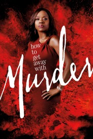
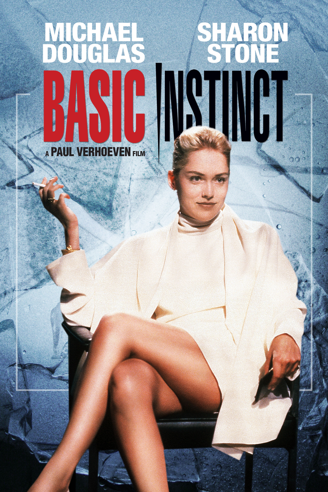

Top three thrillers I have ever watched
How to get away with murder
Annalise Keating is a prominent criminal defense attorney and law professor at Middleton University in Philadelphia. She selects five of her first year students to intern at her firm: Wes Gibbins, Connor Walsh, Michaela Pratt, Asher Millstone, and Laurel Castillo (The Keating 5). They work with Annalise's employees, Frank Delfino and Bonnie Winterbottom, an associate lawyer. As the first season introduces occasional clients for Keating, it explores two related murders through both flashback and flashforward sequences: Lila Stangard, mistress of Annalise's husband and a student at Middleton, and then Sam Keating, Annalise's husband, who was killed by Annalise's interns.
Molly's Game
Molly Bloom is a world-class mogul skier with Olympic aspirations, thanks to years of enforced training from her overbearing father. In a qualifying event for the 2002 Winter Olympics, she is severely injured, ending her career. Initially unfamiliar with poker, Molly quickly learns how to appeal to the players for tips. In particular, she hopes to please the most successful player, a film star named Player X, by attracting new players to the game. Dean, upon seeing that Molly is becoming increasingly independent in running the games, attempts to control, and then fires her.
Basic instinct
Homicide detective Nick Curran investigates the murder of retired rock star Johnny Boz in San Francisco. Boz was stabbed to death with an ice pick while having sex with a mysterious blonde woman. Nick's prime suspect is Boz's girlfriend, crime novelist Catherine Tramell, whose novel mirrors the crime. Catherine is uncooperative and taunts the investigators by smoking and exposing herself. Although she is released, Nick discovers that she has a history of befriending murderers. This includes Roxy Hardy, Catherine's girlfriend, who impulsively killed her two younger brothers at the age of 16, and Hazel Dobkins, who killed her husband and children.